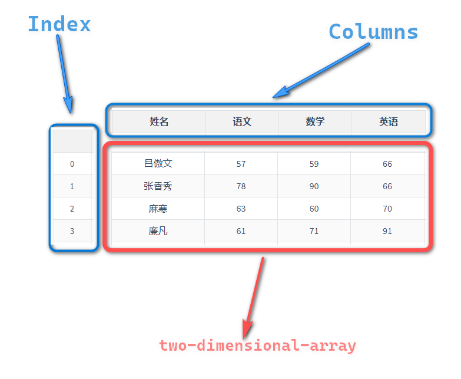

本文的目的是记录和总结,我本人使用Pandas做数据处理与分析一年半以后的经历体会。其中大部分内容是数据处理的相关内容，还有一小部分是关于分析的内容，主要是描述性统计。另外，本文不涉及机器学习和一些常见的统计的方法内容（回归分析、推断统计等）。
数据处理的目标，简而言之就是把“脏数据”，尽过一些处理转换，把数据整理成利于分析和建模的“干净的数据”。
对于脏数据没有明确的定义，可以从一下几点理解。
干净的数据应该符合一下要求：
Series是一种带有标签的一维数组,数组可以存放任意类型的数据,数组对应的标签被称为索引(Index),索引和数组对应的值相对应.
DataFrame是一种带有行和列标记的表格型数据结构,行标记被称作index(索引),列标记被称作column(列名)，值的部分是一个二维数组。

Column和Index分别是列标签和行标签，它们可以用来定位、选择dataframe或者series的值。
根据不同的数据源读取数据到DataFrame(以下简写为df1）
观测df行列结构与值内容，思考数据哪些方面不符合干净数据的要求。
根据观察和业务需要，编写数据处理脚本，生成干净的数据。
如果需要进行数据分析，可以从这份干净的数据开始，编写符合分析需求的脚本，包括不限于一下内容:
将清洗的数据导出到特定储存载体（如excel文件、csv文件、数据库）。
读取各种数据源，比如（CSV、SQL、Excel、JSON、txt等），然后转换为 dataframe。
1# 以读取excel文件为例2df = pd.read_excel("table_01.xlsx")table_01:
| 姓名 | 语文 | 数学 | 英语 | 考试类型 | |
|---|---|---|---|---|---|
| 0 | 吕傲文 | 57 | 59 | 66 | 期中 |
| 1 | 张香秀 | 78 | 90 | 66 | 期中 |
| 2 | 麻寒 | 63 | 60 | 70 | 期中 |
| 3 | 廉凡 | 61 | 71 | 91 | 期中 |
| 4 | 冯乐萱 | 76 | 96 | 87 | 期中 |
| 5 | 吕傲文 | 65 | 81 | 77 | 期末 |
| 6 | 张香秀 | 90 | 94 | 79 | 期末 |
| 7 | 麻寒 | 96 | 97 | 67 | 期末 |
| 8 | 廉凡 | 59 | 70 | 63 | 期末 |
| 9 | 冯乐萱 | 60 | 76 | 71 | 期末 |
需要注意的问题:
41# 表格有10行5列2df.shape3>>> df4>>> (10, 5)31df.columns2>>> df3>>> Index(['姓名', '语文', '数学', '英语', '考试类型'], dtype='object')11df.head(3)| 姓名 | 语文 | 数学 | 英语 | 考试类型 | |
|---|---|---|---|---|---|
| 0 | 吕傲文 | 57 | 59 | 66 | 期中 |
| 1 | 张香秀 | 78 | 90 | 66 | 期中 |
| 2 | 麻寒 | 63 | 60 | 70 | 期中 |
11df.tail(3)| 姓名 | 语文 | 数学 | 英语 | 考试类型 | |
|---|---|---|---|---|---|
| 7 | 麻寒 | 96 | 97 | 67 | 期末 |
| 8 | 廉凡 | 59 | 70 | 63 | 期末 |
| 9 | 冯乐萱 | 60 | 76 | 71 | 期末 |
141df.info()2>>>3<class 'pandas.core.frame.DataFrame'>4RangeIndex: 10 entries, 0 to 95Data columns (total 5 columns):6# Column Non-Null Count Dtype7--- ------ -------------- -----80 姓名 10 non-null object91 语文 10 non-null int64102 数学 10 non-null int64113 英语 10 non-null int64124 考试类型 10 non-null object13dtypes: int64(3), object(2)14memory usage: 528.0+ bytes11df.describe()| 语文 | 数学 | 英语 | |
|---|---|---|---|
| count | 10 | 10 | 10 |
| mean | 70.5 | 79.4 | 73.7 |
| std | 13.8183 | 14.4391 | 9.51081 |
| min | 57 | 59 | 63 |
| 25% | 60.25 | 70.25 | 66.25 |
| 50% | 64 | 78.5 | 70.5 |
| 75% | 77.5 | 93 | 78.5 |
| max | 96 | 97 | 91 |
使用pandas_profiling可以自动生成关于df的各种角度的详细的关于数据的元信息报告，对于简单的数据其实没有必要使用这个工具，但是它对于快速观测数据源的信息的确非常有用。
21from pandas_profiling import ProfileReport2profile = ProfileReport(df, title='pandas_profiling_output')输出结果见此链接: pandas_profiling_output
数据处理方法没有固定的流程和套路，具体使用什么方法处理数据，需要根据具体数据和实际需求来针对性处理。但是数据处理方法还是有迹可循的，下面是使用Pandas常用的必然遇到的数据操纵方法总结
说明:
重命名列名
41# pandas原生方法2df.rename(columns=dict) #dict是一个以原始列名为键，修改后列名为值的字典3# 使用pyjanitor扩展方法4df.rename_columns(dict)重排序列名
41# pandas原生方法2df = df[reorder_columns] # reorder_columns表示新的列名顺序的数组3# 使用pyjanitor扩展方法4df.reorder_columns(reorder_columns)选择列
41# pandas原生方法2df[column_names] #column_names是需要选择的列名组成的数组3# 使用pyjanitor扩展方法4df.select_columns(column_names)详解df.select_columns：
选择列名支持通配符
当你需要选择多列的时候,然后多列的名称又遵循某个规则,使用通配符选择列名的方法会比传递一个实际列名数组要快速、简洁很多。
Table_02:
| 排名 | 球队 | 场次 | 积分 | 胜 | 平 | 负 | 进球 | 失球 | 净胜球 | |
|---|---|---|---|---|---|---|---|---|---|---|
| 0 | 1 | 埃弗顿 | 5 | 13 | 4 | 1 | 0 | 14 | 7 | 7 |
| 1 | 2 | 阿斯顿维拉 | 5 | 12 | 4 | 0 | 1 | 12 | 5 | 7 |
| 2 | 3 | 利兹联 | 6 | 10 | 3 | 1 | 2 | 12 | 9 | 3 |
| 3 | 4 | 利物浦 | 5 | 10 | 3 | 1 | 1 | 13 | 13 | 0 |
| 4 | 5 | 莱斯特城 | 5 | 9 | 3 | 0 | 2 | 12 | 8 | 4 |
| 5 | 6 | 阿森纳 | 5 | 9 | 3 | 0 | 2 | 8 | 6 | 2 |
| 6 | 7 | 狼队 | 5 | 9 | 3 | 0 | 2 | 5 | 7 | -2 |
| 7 | 8 | 热刺 | 5 | 8 | 2 | 2 | 1 | 15 | 8 | 7 |
需求：Table_02是截止于北京时间2020年10月24日的英超积分榜前8名数据,如何只选择排名、球队、进球、失球和净胜球五列呢？
Pandas原生方法:
11df[["排名","球队","进球","失球","净胜球"]]使用通配符方法是这样:
11df.select_columns(["排名","*球*"])输出结果:
| 排名 | 球队 | 进球 | 失球 | 净胜球 | |
|---|---|---|---|---|---|
| 0 | 1 | 埃弗顿 | 14 | 7 | 7 |
| 1 | 2 | 阿斯顿维拉 | 12 | 5 | 7 |
| 2 | 3 | 利兹联 | 12 | 9 | 3 |
| 3 | 4 | 利物浦 | 13 | 13 | 0 |
| 4 | 5 | 莱斯特城 | 12 | 8 | 4 |
| 5 | 6 | 阿森纳 | 8 | 6 | 2 |
| 6 | 7 | 狼队 | 5 | 7 | -2 |
| 7 | 8 | 热刺 | 15 | 8 | 7 |
两种方法对比显然第2种方法更加简洁,同时减少编码时间。
支持反向选择
该方法可以支持反向选择列，如果你只是需要从源数据里排除很少的列不选择，反向选择是一个比较便利的方式。
需求：如何选择除了场次之外的所有列
Pandas原生方法:
11df[["排名","球队","积分","胜","平","负","进球","失球","净胜球"]]反向选择方法：
11df.select_columns(["场次"],invert=True)输出结果:
| 排名 | 球队 | 积分 | 胜 | 平 | 负 | 进球 | 失球 | 净胜球 | |
|---|---|---|---|---|---|---|---|---|---|
| 0 | 1 | 埃弗顿 | 13 | 4 | 1 | 0 | 14 | 7 | 7 |
| 1 | 2 | 阿斯顿维拉 | 12 | 4 | 0 | 1 | 12 | 5 | 7 |
| 2 | 3 | 利兹联 | 10 | 3 | 1 | 2 | 12 | 9 | 3 |
| 3 | 4 | 利物浦 | 10 | 3 | 1 | 1 | 13 | 13 | 0 |
| 4 | 5 | 莱斯特城 | 9 | 3 | 0 | 2 | 12 | 8 | 4 |
| 5 | 6 | 阿森纳 | 9 | 3 | 0 | 2 | 8 | 6 | 2 |
| 6 | 7 | 狼队 | 9 | 3 | 0 | 2 | 5 | 7 | -2 |
| 7 | 8 | 热刺 | 8 | 2 | 2 | 1 | 15 | 8 | 7 |
显而易见,select_columns方法更加方便使用!
移除列
41# 使用pyjanitor扩展方法，columns_names表示需要移除的列的名称的数组。2df.remove_columns(column_names)3# pandas原生方法4df.drop(columns=column_names)增加列
51# 使用pyjanitor扩展方法，columns_name表示增加列的列名2# value表示增加列的值，可以是标量也可以是数组。3df.add_column(column_name,value)4 # pandas原生方法5df[column_name] = value增加多列
81# pandas原生方法2df[column_name_1] = value_13df[column_name_2] = value_24...5df[column_name_n] = value_n6# 使用pyjanitor扩展方法7# column_name_1 新加列名1 value_1 对应的值，依此类推..8df.add_columns(column_name_1=value_1,column_name_2=value_2 ... column_name_n=value_n)详解df.add_columns:
需求: 继续以Table_02为例,新增加两列计算不败率和场均失球
Pandas原生方法(额外扩展2种方法):
121# 常规方案2df["不败率"] = (df["胜"] + df["平"])/df["场次"]3df["场均失球"] = df["失球"]/df["场次"]4# 高级用法一(df.assign)5df.assign(不败率=(df["胜"] + df["平"])/df["场次"],场均失球=df["失球"]/df["场次"])6# 高级用法二(df.eval)7df.eval(8 '''9 不败率=(胜+平)/场次10 场均失球=失球/场次11 '''12 )df.add_columns方法:
11df.add_columns(不败率=(df["胜"] + df["平"])/df["场次"],场均失球=df["失球"]/df["场次"])输出结果:
| 排名 | 球队 | 场次 | 积分 | 胜 | 平 | 负 | 进球 | 失球 | 净胜球 | 不败率 | 场均失球 | |
|---|---|---|---|---|---|---|---|---|---|---|---|---|
| 0 | 1 | 埃弗顿 | 5 | 13 | 4 | 1 | 0 | 14 | 7 | 7 | 1 | 1.4 |
| 1 | 2 | 阿斯顿维拉 | 5 | 12 | 4 | 0 | 1 | 12 | 5 | 7 | 0.8 | 1 |
| 2 | 3 | 利兹联 | 6 | 10 | 3 | 1 | 2 | 12 | 9 | 3 | 0.666667 | 1.5 |
| 3 | 4 | 利物浦 | 5 | 10 | 3 | 1 | 1 | 13 | 13 | 0 | 0.8 | 2.6 |
| 4 | 5 | 莱斯特城 | 5 | 9 | 3 | 0 | 2 | 12 | 8 | 4 | 0.6 | 1.6 |
| 5 | 6 | 阿森纳 | 5 | 9 | 3 | 0 | 2 | 8 | 6 | 2 | 0.6 | 1.2 |
| 6 | 7 | 狼队 | 5 | 9 | 3 | 0 | 2 | 5 | 7 | -2 | 0.6 | 1.4 |
| 7 | 8 | 热刺 | 5 | 8 | 2 | 2 | 1 | 15 | 8 | 7 | 0.8 | 1.6 |
add_columns方法的优点是比常规方法简洁，比高级用法语义明确。
拆分单列
合并多列
21 # 使用pyjanitor方法2 df = df.concatenate_columns(column_names=[需要合并的列名的数组],new_column_name='新列名',sep="分隔符")选择行
删除行
增加行
观察是否存在列名命名不规范
如果存在列名命名不规范，修改列名。 列名的命名要求是在保证语义明确的前提下尽可能简洁，避免使用各种标点符号。（Table_01命名没有不规范不需要修改）
是否存在一个变量被存储于多列
可以使用melt操作将多列融化到单列，然后再标记多列对应的分类变量类型值。
21# table_01，科目这个变量被存储于多列(语文、数学、英语) 。2df.melt(id_vars=["姓名","考试类型"],var_name="科目",value_name="成绩")| 姓名 | 考试类型 | 科目 | 成绩 | |
|---|---|---|---|---|
| 0 | 吕傲文 | 期中 | 语文 | 86 |
| 1 | 吕傲文 | 期中 | 数学 | 90 |
| 2 | 吕傲文 | 期中 | 英语 | 91 |
| 3 | 张香秀 | 期中 | 语文 | 67 |
| 4 | 张香秀 | 期中 | 数学 | 79 |
| 5 | 张香秀 | 期中 | 英语 | 78 |
| 6 | 麻寒 | 期中 | 语文 | 73 |
| 7 | 麻寒 | 期中 | 数学 | 57 |
| 8 | 麻寒 | 期中 | 英语 | 85 |
| 9 | 廉凡 | 期中 | 语文 | 96 |
| 10 | 廉凡 | 期中 | 数学 | 65 |
| 11 | 廉凡 | 期中 | 英语 | 68 |
| 12 | 冯乐萱 | 期中 | 语文 | 73 |
| 13 | 冯乐萱 | 期中 | 数学 | 56 |
| 14 | 冯乐萱 | 期中 | 英语 | 76 |
| 15 | 吕傲文 | 期末 | 语文 | 90 |
| 16 | 吕傲文 | 期末 | 数学 | 67 |
| 17 | 吕傲文 | 期末 | 英语 | 76 |
| 18 | 张香秀 | 期末 | 语文 | 89 |
| 19 | 张香秀 | 期末 | 数学 | 96 |
| 20 | 张香秀 | 期末 | 英语 | 100 |
| 21 | 麻寒 | 期末 | 语文 | 76 |
| 22 | 麻寒 | 期末 | 数学 | 67 |
| 23 | 麻寒 | 期末 | 英语 | 94 |
| 24 | 廉凡 | 期末 | 语文 | 84 |
| 25 | 廉凡 | 期末 | 数学 | 62 |
| 26 | 廉凡 | 期末 | 英语 | 83 |
| 27 | 冯乐萱 | 期末 | 语文 | 65 |
| 28 | 冯乐萱 | 期末 | 数学 | 75 |
| 29 | 冯乐萱 | 期末 | 英语 | 56 |
是否存在一列存储了多个变量
可以使用字符串分列或者正则表达式提取的方法拆分至多列。
41 # plan 12df[col_name].str.split(sep,expand=True)3 # plan 24df[col_name].str.extrat(pat,expand=True)是否存在多个变量，有的存储在行，也有的储存在了列
先进行melt然后再进行unstack
31 # 继续引用table_012df.melt(id_vars=["姓名","考试类型"],var_name="科目",value_name="成绩").set_index(['姓名', '科目', '考试类型'])['成绩'].unstack(-1).reset_index()3df.columns.name = ''| 姓名 | 科目 | 期中 | 期末 | |
|---|---|---|---|---|
| 0 | 冯乐萱 | 数学 | 84 | 81 |
| 1 | 冯乐萱 | 英语 | 58 | 100 |
| 2 | 冯乐萱 | 语文 | 83 | 84 |
| 3 | 吕傲文 | 数学 | 67 | 61 |
| 4 | 吕傲文 | 英语 | 88 | 67 |
| 5 | 吕傲文 | 语文 | 67 | 77 |
| 6 | 廉凡 | 数学 | 58 | 96 |
| 7 | 廉凡 | 英语 | 90 | 63 |
| 8 | 廉凡 | 语文 | 99 | 79 |
| 9 | 张香秀 | 数学 | 58 | 91 |
| 10 | 张香秀 | 英语 | 92 | 81 |
| 11 | 张香秀 | 语文 | 77 | 96 |
| 12 | 麻寒 | 数学 | 55 | 59 |
| 13 | 麻寒 | 英语 | 81 | 81 |
| 14 | 麻寒 | 语文 | 84 | 97 |
是否存在不同观测目的的表被组合在一张表内
根据表的定义分解到多表中，方法通常是选择需要的列，删除重复的行，保存ID列，拆分到多张表。
是否存在同一观测目的的数据被储存在了多个表中
循环读取每张表然后合并到一张表
41df_all = pd.DataFrame()2for file in fies:3 df = pd.read_excel(file)4 df_all = pd.concat([df_all,df],axis=0)是否存在完全无意义的空行和空列
删除无意义的空行或者空列
41# 删除空列2df.dropna(axis='columns',how='all')3# 删除空行4df.dropna(axis='index',how='all')是否定义准确数据类型
如果数据类型可能存在问题，可以转换到需要的数据类型。
11df[col_name]=df[col_name].astype(typename)是否需要进行多表联接,是否可以多表连接，使用哪种联接方式
如果需要多表联接，首先需要找到匹配的ID列，匹配的ID列可以是多列组合也可以单独的ID列。 根据具体需求，可以采用内联接，左联接，外联接。
11df.merge(df1,how='left|right|inner',on='联接键')是否存在重复的数据行
如果存在完全重复的数据行，需要删除。
11df.drop_duplicates()根据具体数据处理需求的不同，会需要采取不同的操作，但是绝大部分不外乎以下内容。
map、apply、transform、agg、applymap等操作groupby操作然后再进行map、apply、transform、agg、applymap等操作